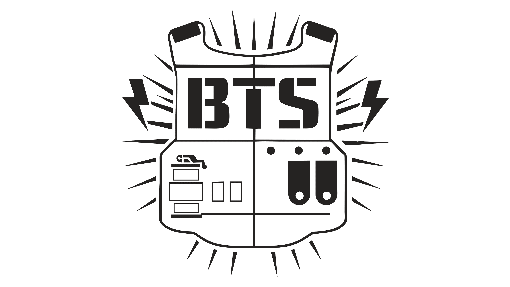

banda surcoreana de K-pop, debutó en 2013 bajo la agencia Big Hit Entertainment (ahora HYBE).
Compuesta por siete miembros (RM, Jin, Suga, J-Hope, Jimin, V y Jungkook), BTS ha ganado reconocimiento mundial
por su música, actuaciones y conexión con sus fans, conocidos como ARMY.
Pre-Debut y Formación
Big Hit Entertainment buscó la formación de un grupo masculino basado en hip-hop desde 2010.
Se realizaron audiciones, y se formó un grupo llamado Bangtan Boys, que luego sería conocido como BTS.
RM es el único miembro original que ha permanecido en la alineación final.
Tras varios cambios en la alineación, el grupo debutó en 2013.
Debut y Ascenso a la Fama
BTS debutó el 13 de junio de 2013 con el EP "2 Cool 4 Skool" y la canción "No More Dream".
Su álbum "Dark & Wild" (2014) y los álbumes "The Most Beautiful Moment in Life" (2015) y "The Most Beautiful Moment in Life: Young Forever" (2016) ayudaron a atraer la atención del público.
Con estos últimos dos álbumes, BTS ingresó a la lista Billboard 200.
El álbum "The Most Beautiful Moment in Life: Young Forever" ganó el premio al Álbum del Año en los Melon Music Awards de 2016.
Éxito Internacional y Legado
BTS ha trascendido fronteras, razas, idiomas, géneros y generaciones con su música y actuaciones.
Han sido reconocidos con numerosos premios y reconocimientos, incluyendo el Billboard Music Award y la inclusión en el top 10 de la lista Billboard 200.
Han sido los primeros artistas de K-pop en lograr estos éxitos internacionales.
Su impacto en la cultura pop coreana y en la industria musical mundial ha sido significativo.
Más allá de la música
BTS también ha sido reconocido por su compromiso con temas sociales, como la salud mental y la igualdad.
Han sido embajadores de marcas de renombre y han participado en campañas sociales.
Su influencia se extiende más allá de la música, incluyendo la moda, el estilo de vida y la cultura popular.
En resumen, la historia de BTS es la de un grupo que, desde sus inicios humildes, ha logrado conquistar el mundo con su música, su talento y su conexión con sus fans, dejando un legado duradero en la historia del K-pop y más allá.
Primer Logo
Primera Cancion
Cancion mas popular
Frase

"Soy la estrella que convierte cosas normales en extraordinarias"